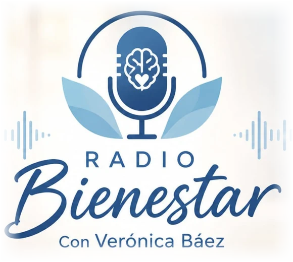
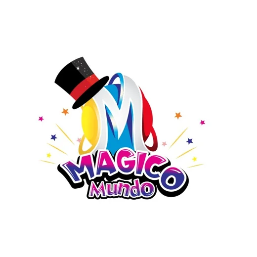
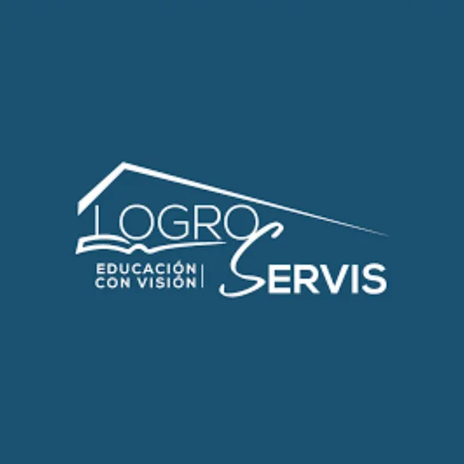

Humana
Antes que un diagnóstico, cada persona tiene una historia. La primera conversación es para escuchar: qué te preocupa, qué has intentado y qué esperas.
Psicóloga y neuropsicóloga clínica. Acompaño a niños, adolescentes y adultos a entender su mente y a recuperar la calma.
Muchas personas pasan años sin saber por qué todo les cuesta más.
Familias que no saben cómo ayudar a un hijo que aprende distinto. Adultos que cargan con la ansiedad en silencio.
Bienestar nace para que eso cambie.
Un lugar tranquilo donde la ciencia y la cercanía trabajan juntas, a tu ritmo.
La mente también debe ser atendida.
Con la misma seriedad y el mismo cuidado que damos al cuerpo.
En Bienestar cada persona recibe una evaluación seria, una explicación clara y un acompañamiento que respeta su ritmo.
Atiendo de forma presencial en Quito y también en línea, con niños, adolescentes, adultos y sus familias.
Antes que un diagnóstico, cada persona tiene una historia. La primera conversación es para escuchar: qué te preocupa, qué has intentado y qué esperas.
Explico cada paso con palabras simples y sin tecnicismos. Estamos en contacto directo por WhatsApp y las familias participan en el proceso.
Trabajo con pruebas neuropsicológicas estandarizadas y técnicas con respaldo científico, como la rehabilitación neuropsicológica y la Estimulación Magnética Transcraneal.
Psicóloga y neuropsicóloga clínica, con trabajo en evaluación y rehabilitación neuropsicológica para niños, adolescentes y adultos.
Contenido pendiente
Aquí irán los títulos, especializaciones, cursos y años de experiencia de Verónica, según el documento que va a enviar.

Verónica también conduce Radio Bienestar, un espacio para hablar de psicología, neuropsicología, familia y pareja con palabras simples.
Tu mente también merece cuidado
Instituciones y proyectos con los que trabajamos de cerca.

